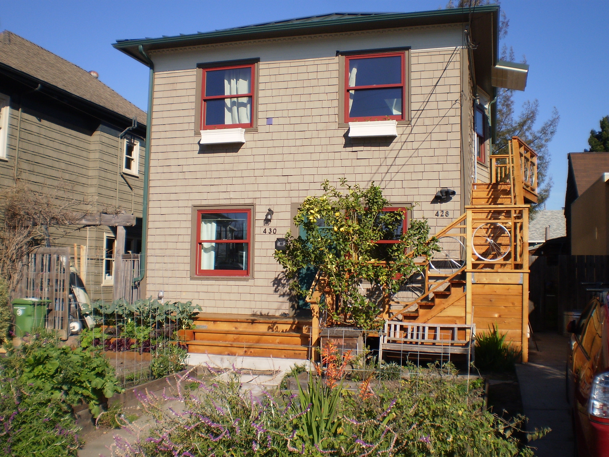
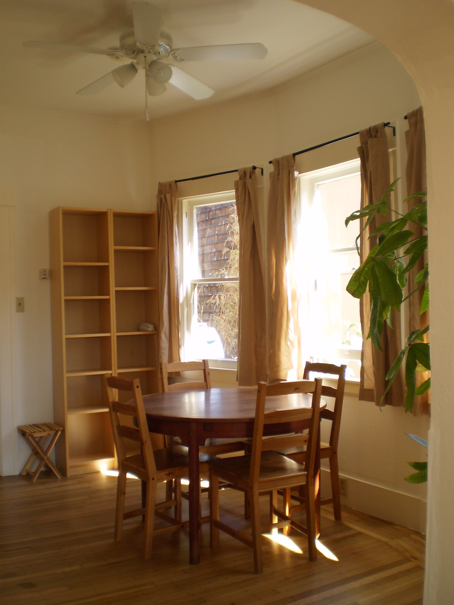
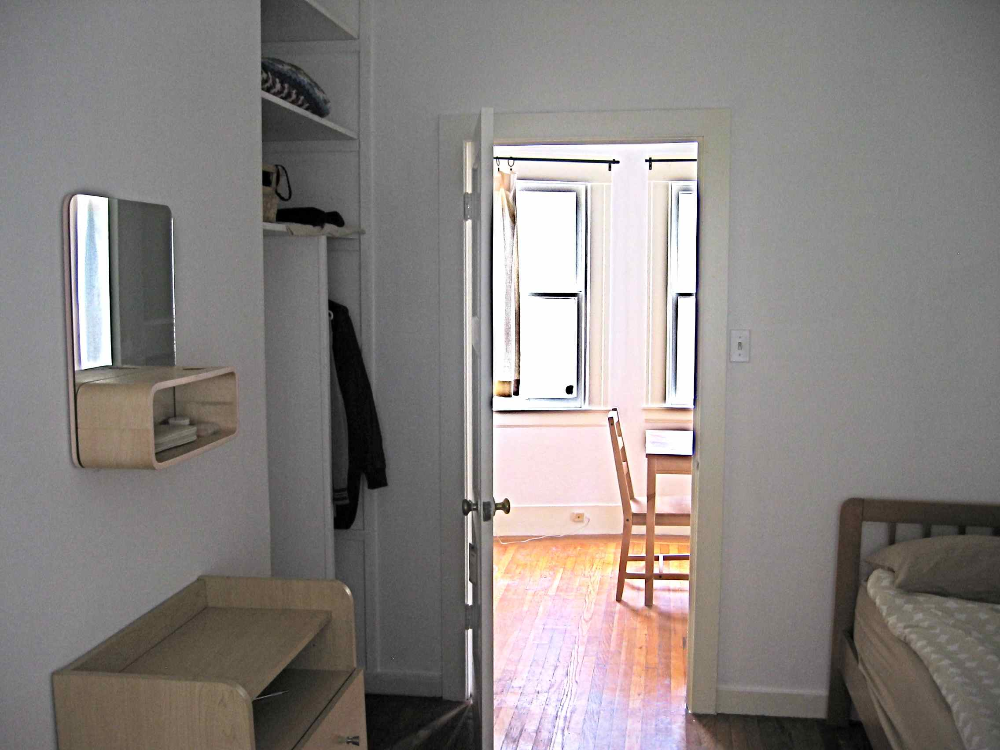
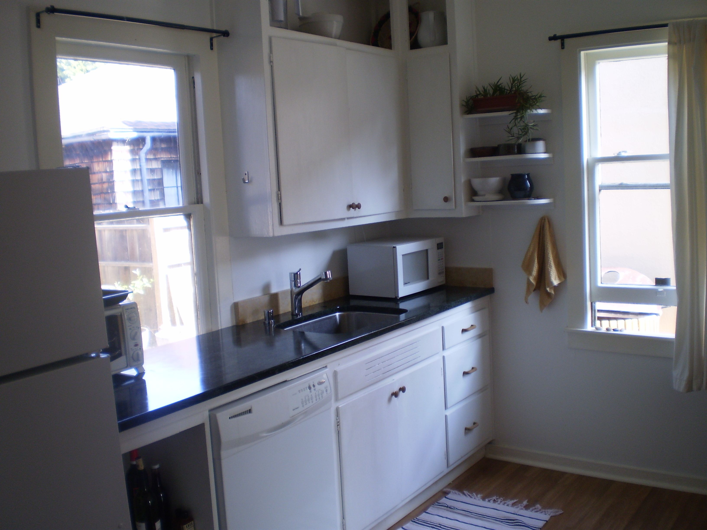
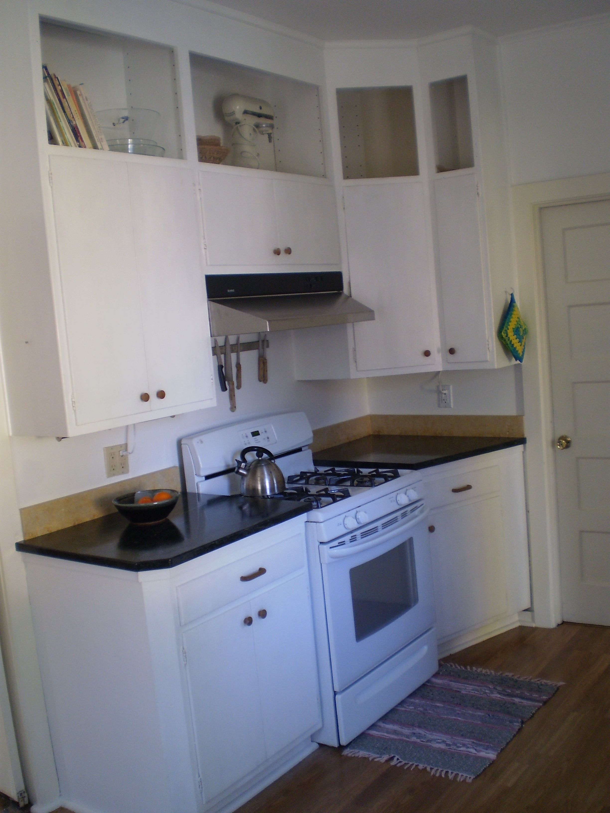

430 65th StThis is an informal website for people interested in our rental apartment. 430 65th is the downstairs apartment of a duplex (we live upstairs). Here are a few details:
|
 |




Our neighborhood (65th & Dana St) is quiet, community focused, child friendly, and just a 5 minute walk to the heart of the Rockridge and the Elmwood districts, right along the Berkeley/Oakland border. Here are a few foodie places in close vicinity we like: